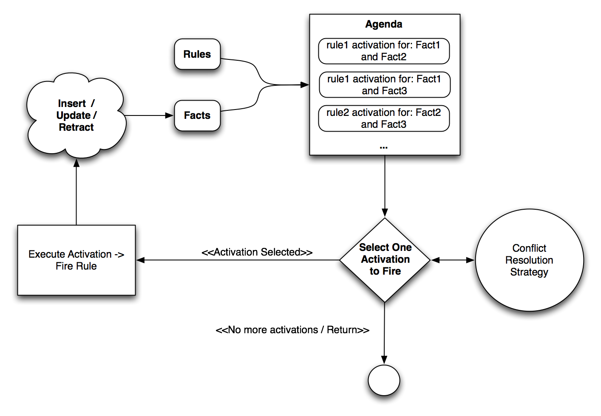
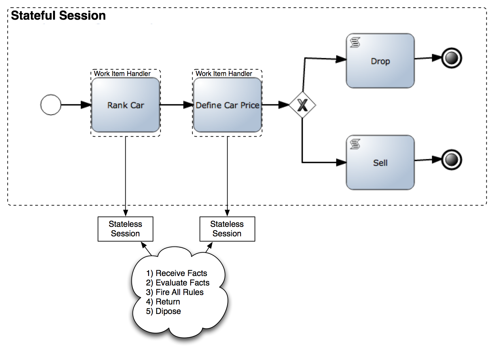
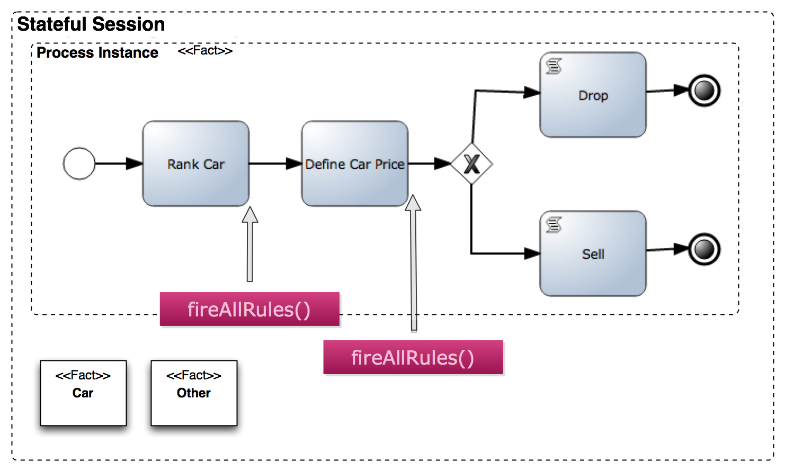

(PROCESSES & RULES) OR (RULES & PROCESSES) 3/X
- (PROCESSES & RULES) OR (RULES & PROCESSES) 1/X -> Introduction
- (PROCESSES & RULES) OR (RULES & PROCESSES) 2/X -> Old Integration Patterns
Introduction

- Synchronous Process


- Rule Engine: Evaluation and Firing Cycle
- Evaluation / Activation: When we insert new data (Facts) into the Rule Engine, the information is evaluated and all the rules that evaluates their conditions to true will be activated. All this activations are placed inside the Agenda.
- Firing: Using a Conflict Resolution Strategy, the Rule Engine will pick one Activation from the agenda and it will execute the Consequence for that rule, which can cause new activations to be placed inside the agenda or the cancellation of previous activations. After finishing executing the selected activation, the engine will pick another activation to execute. This loop will continue until there are no more Activations in the Agenda.
Stateful vs Stateless

- Stateful and Stateless Contexts

- Stateful Context
The Reactive Mode
- Fire Until Halt
- Agenda & Process Event Listeners
Fire Until Halt
<
div style=”color: #333333; font-family: Georgia, ‘Times New Roman’, ‘Bitstream Charter’, Times, serif; font-size: 13px; line-height: 19px;”>
<
pre style=”font-family: Consolas, Monaco, monospace; font-size: 12px; line-height: 18px;”>
<br /><br />new Thread(new Runnable() {<br /><br /> public void run() {<br /><br /> ksession.fireUntilHalt();<br /><br /> }<br /><br />} ).start();<br /></pre></div><br />The only downside of using the Fire Until Halt approach is that we need to create another thread – this is not always possible. We will see that when we use the persistence layer for our business process, using this alternative is not recommended. For testing purposes relying on other thread to fire our rules can add extra complexity and possible race conditions. That’s why the following method, which uses listeners, is usually recommended.
Check an example of Fire Until Halt here: https://github.com/Salaboy/jBPM5-Developer-Guide/blob/master/chapter_09/jBPM5-Process-Rules-Patterns/src/test/java/com/salaboy/jbpm5/JBPM5ProcessAndRulesIntegrationPatternsTest.java#L113
Agenda & Process Event Listeners
Using the Agenda and Process Event Listeners mode allows us to get the internal Engine events and execute a set of actions as soon as the events are triggered. In order to set up these listeners, we need to add the following code snippet right after the session creation, so we don’t miss any event:
<br /><br />ksession.addEventListener(<br /><br />new <strong>DefaultAgendaEventListener</strong>() {<br /><br /> @Override<br /> public void <strong>activationCreated</strong>(<br /> ActivationCreatedEvent event) {<br /><br /> ((StatefulKnowledgeSession) event.getKnowledgeRuntime())<br /> .fireAllRules();<br /> }<br /><br />});<br /> ksession.addEventListener(<br /> new <strong>DefaultProcessEventListener</strong>(){<br /><br /> @Override<br /> public void <strong>afterProcessStarted</strong>(<br /> ProcessStartedEvent event) {<br /><br /> ((StatefulKnowledgeSession) event.getKnowledgeRuntime())<br /> .fireAllRules();<br /> }<br /><br />});<br /><br />Notice that we are attaching a DefaultAgendaEventListener and a DefaultProcessEventListener that define several events where we can hook up behavior. In this example, we are overriding the behavior of the activationCreated(…) and afterProcessStarted(…) methods, because we need to fire all the rules as soon as an activation is created or a process has started. Look at the other methods inside the DefaultAgendaEventListener and DefaultProcessEventListener to see the other events that can be used as hook points. This approach using listeners gives us a more precise and single threaded approach to work.
Check an example using Agenda and Process Event Listeners here: https://github.com/Salaboy/jBPM5-Developer-Guide/blob/master/chapter_09/jBPM5-Process-Rules-Patterns/src/test/java/com/salaboy/jbpm5/JBPM5ProcessAndRulesIntegrationPatternsTest.java#L164
Notice that this example works in the same way that the previous one, it give us the same results, but in this one we don’t need to sleep to wait another thread to finish the execution of the fire all rules cycle. Sleeping is not an option for real applications, and because of the recursive nature of the cycle we will never know for sure how much time the other thread will require to finish.Summary
Knowing about how to put the Rule Engine in Reactive Mode will be a common practice to work with processes and rules. It is important to know that both approaches – Fire Until Halt and Agenda and Process Event Listeners – give the same results in the previous tests, but they work in different ways. We need to understand these differences in order to choose wisely.
I strongly recommend you to check the examples provided in the links, to get familiar with this behavior. Future posts will work in Reactive Mode, and understanding how everything works in the back will help you to understand more advanced examples. Enable the logs in the example and analyze the output to understand the Process and Rules execution.
If you have questions about the examples, post a comment :)
If you have suggestions about how to improve the examples, post a comment :)
Enjoy!

{kind=link}
{kind=link}
{kind=link}